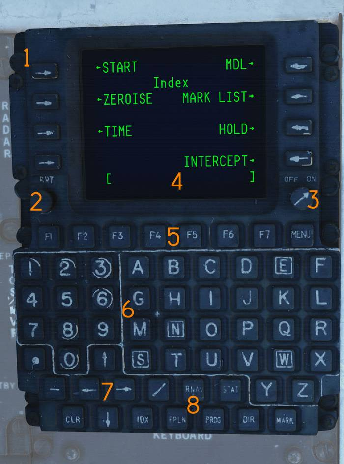
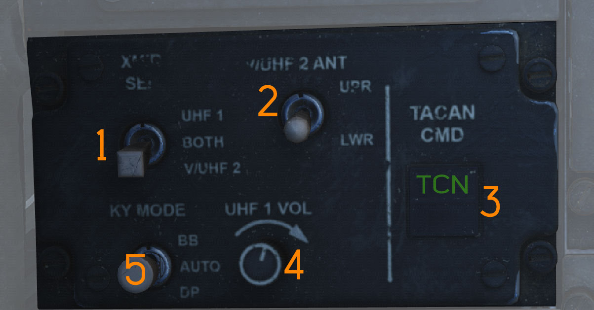
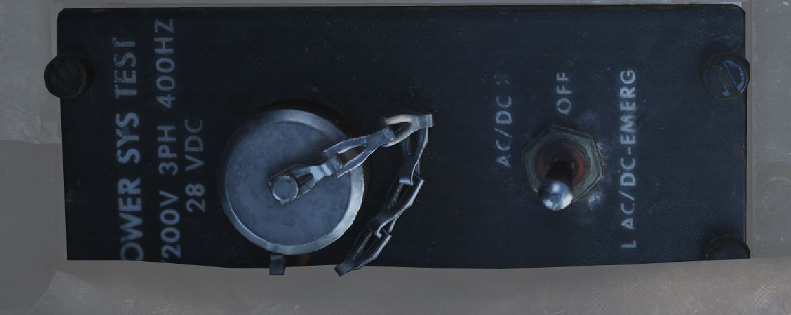
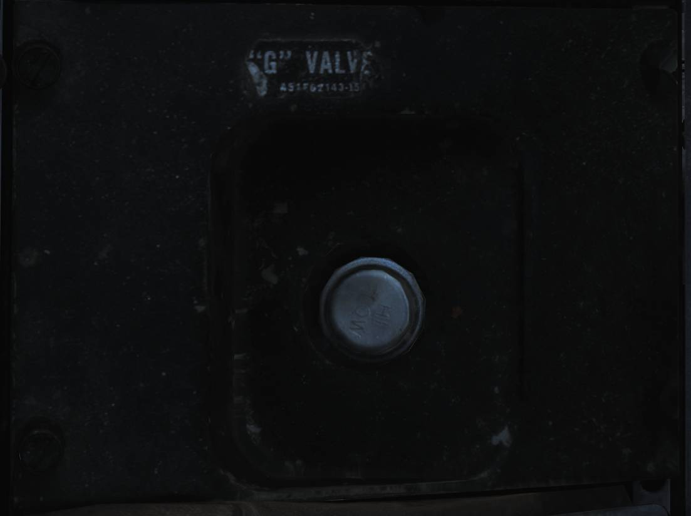
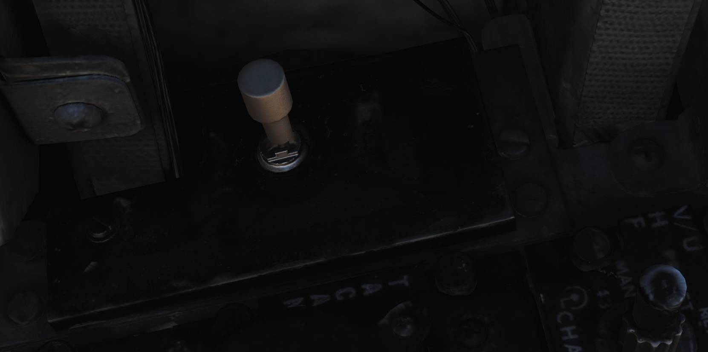

Left Side Console
💡 The Left Side Console consists of the:
- Sensor Control Panel (
1 )- Control Display Navigation Unit (CDNU) (
2 )- LANTIRN Control Panel (LCP) (
3 )- Computer Address Panel (CAP) (
4 )- Communication / TACAN Command Panel (
5 )- Radar Beacon Control Panel (
6 )- Power System Test Panel (
7 )- KY-28 Control Panel (
8 )- Oxygen-Vent Airflow Control Panel (
9 )- G-Valve Button (
10 )- Liquid Cooling Control Panel (
11 )- Eject Command Lever (
12 )

Sensor Control Panel
The Sensor Control Panel (

Stabilization Switch
The STAB switch (
Azimuth Center Knob
The AZ CTR knob (
Elevation Center Knob
The EL CTR knob (
VSL Switch
The VSL switch (
- VSL HI
- VSL LO
Azimuth Scan Knob
The AZ SCAN knob (
Elevation Bars Knob
The EL BARS knob (
TCS Trim Knobs
The TCS TRIM knobs (
Slave Switch
The SLAVE switch (
Acquisition Switch
The ACQ switch (
- AUTO SRCH
- MAN
- AUTO
Field of View Switch
The FOV switch (
- WIDE
- NAR
AVTR Mode Knob
The MODE knob (
In the F-14B Upgrade that knob is disabled. VTR recording is selected via the ECMD. Reference the Fast Tactical Imaging section of this manual.
Minutes Remaining Display
The MIN REMAIN display (
Record Switch
The RECORD switch (
- OFF
- STBY
- ON
FTI is set to operate with the switch in STBY or ON.
AVTR Indicator Lights
The indicator lights (
- STBY
- EOT (end of tape)
- REC
Control Display Navigation Unit (CDNU)
The CDNU (

Line Select Keys
Eight Line Select Keys (
Brightness knob
The BRT control (
On / Off knob
The ON / OFF knob (
Scratchpad
The Scratchpad (
Function keys
The Function keys (
Keypad
The Keypad (
Arrow Keys
The Arrow keys (
Dedicated Menu Select Keys
The FPLN (flight plan), PROG (progress), DIR (direct), RNAV (area navigation),
and MARK (
The STAT (status), MENU, and IDX (index) dedicated select keys permit access to a variety of information applicable to the general flight operation and maintenance of the navigation system.
LANTIRN Control Panel (LCP)
The control panel (

Power switch
Three-position rotary switch (
Hand Operated Controller
Provides for selection of critical targeting pod operating functions
(
Mode switch
Standby/operate switch (
Following application of full power (POD on), STBY lamp off until all internal checks complete, FLIR has cooled to operating temperature, gimbal is stowed, and system is in low power state and ready to be commanded to operate mode.
STBY - Pressing switch when STBY is on commands system to operate mode, while gimbal is un-stowing, lamp will flash. When gimbal is un-stowed, OPER lamp comes on and STBY lamp goes off.
OPER - Pressing switch when OPER is on commands system to standby mode and stows gimbal. While gimbal is stowing, STBY lamp will flash and when fully stowed, STBY lamp is on steady and OPER lamp is off.
Bit Advisory Lamps
The four grouped indicator lights (
Video toggle switch
This switch selects either TCS or FLIR video (
- FLIR - LANTIRN FLIR video mode.
- TCS - Television Camera System video mode.
IBIT switch
The IBIT button (
LASER Arm switch
Lever locked laser arm switch (
- SAFE- Laser cannot be fired.
- ARM - Laser can be fired (If all conditions are met).
LASER Armed lamp
Lamp (
Computer Address Panel (CAP)
The Computer Address Panel (

Clear Button
The CLEAR button (
Enter Button
The ENTER button (
Prefix and Numerical Buttons
The numerical and prefix buttons (
Message Selection Buttons
The MESSAGE buttons (
Message Indicator Drum
The MESSAGE drum (
Program Restart Button
The PRGM RESTRT button (
Category Selector Knob
The CATEGORY knob (
Tune Disable
The TUNE DSBL function (
💡 All CAP buttons include indicator lights that illuminate based on selected function.
Communication / TACAN Command Panel
Panel (

Transmitter Select Switch
The XMTR SEL switch (
- UHF 1 - ARC-159.
- BOTH - Both radios.
- V/UHF 2 - ARC-182.
V/UHF 2 Antenna Switch
The V/UHF 2 ANT switch (
- UPR - Upper antenna.
- LWR - Lower antenna.
TACAN/EGI Command Switch
The TACAN/EGI CMD switch (
UHF 1 Volume Knob
The UHF 1 VOL knob (
KY Mode Switch
The KY MODE switch (
The simulated aircraft uses KY-58; this switch is non-functional.
Radar Beacon Control Panel
Panel (

Beacon Mode Selector
The MODE selector (
- SINGLE - Responds to single-pulse interrogation.
- DOUBLE - Responds to double-pulse code.
- ACLS - Enables ACLS augmentation for carrier landings.
ACLS Test Button
The ACLS TEST button (
- Illuminates during successful test.
- Flashes when SPN-42 radar sweep is detected.
- Steady illumination indicates radar lock-on for ACLS.
Power Switch
The PWR switch (
- PWR - Beacon fully active.
- STBY - Warm-up mode; ACLS replies enabled if MODE is ACLS.
- OFF - Beacon off.
Power System Test Panel
Power System Test Panel (

💡 Non-functional in DCS.
KY-28 Control Panel
Encryption control panel (

Zeroize Switch
The ZEROIZE switch (
Power-Mode Switch
The power-mode switch (
Radio Select Switch
The radio select switch (
Oxygen-Vent Airflow Control Panel
Panel (

Vent Airflow Dial
The VENT AIRFLOW dial controls airflow through the pressure suit or seat cushions when no pressure suit is worn.
Oxygen Switch
The OXYGEN switch controls oxygen flow to the RIO oxygen mask.
- ON - Oxygen supplied to mask.
- OFF - Oxygen flow shut off.
G-Valve Button
The G-valve button (

Liquid Cooling Control Panel

LIQ COOLING switch (
Eject Command Lever
The EJECT CMD lever (

- PILOT (lever forward) - Only the RIO ejects.
- MCO (lever aft) - Both crewmembers eject.
Pilot-initiated ejection always ejects both crew members.